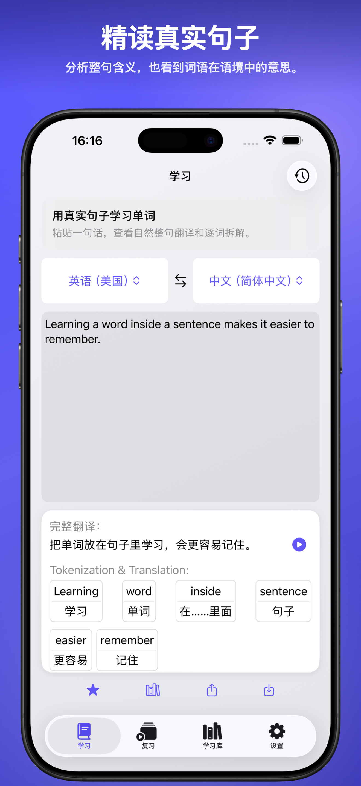
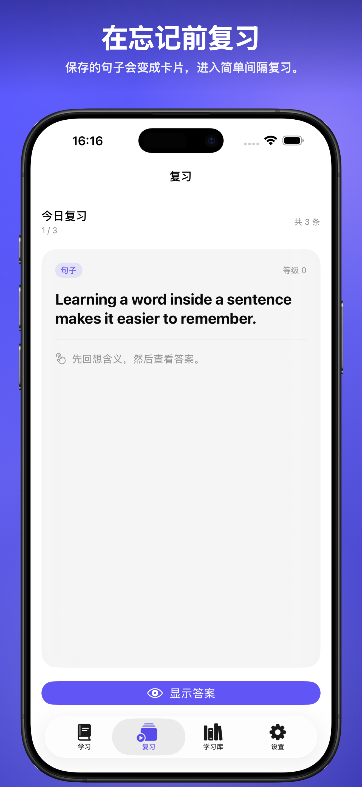
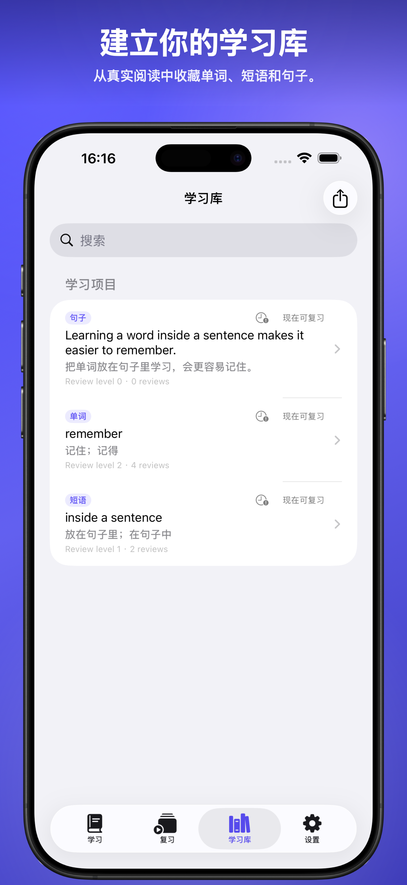

Học ngôn ngữ qua câu cho iPhone, iPad và Mac
PhraseCut
Biến câu thật thành tài liệu học có thể hiểu, lưu, ôn tập và xuất ra. Dán một câu, xem nghĩa toàn câu, kiểm tra từ và cụm từ hữu ích, rồi giữ lại phần quan trọng trong thư viện của bạn.
Sentence Workspace
Real sentences show context, usage, and tone.
真实句子展示语境、用法和语气。
SaveReviewExport CSV
Xem trước trong app
Xem luồng Learn, Review và Library trước khi tải.


Dành cho người học đọc nội dung thật
Bắt đầu bằng nghĩa tự nhiên của cả câu để hiểu dòng đó đang nói gì trước khi học từng phần.
Hiểu từ vựng trong ngữ cảnh thay vì học danh sách từ rời rạc.
Giữ từ, cụm từ và câu trong một thư viện, ôn lại sau và xuất CSV hoặc tệp tương thích Anki.
Một câu vào, thư viện học ra.
PhraseCut phù hợp để thu thập ngôn ngữ từ bài viết, newsletter, phụ đề, lời bài hát, tin nhắn và sách. Câu gốc và nghĩa được giữ cùng nhau để ghi chú vẫn hữu ích về sau.
Hướng dẫn học từ vựng qua câu
Tìm hiểu cách phân tích câu, lưu từ và cụm từ hữu ích, ôn tập và xuất thư viện học.
Câu hỏi thường gặp
PhraseCut có chỉ là app dịch không?
Không. Dịch là một phần của luồng học, nhưng PhraseCut được tổ chức quanh ngữ cảnh, mục đã lưu, ôn tập và xuất dữ liệu.
Tôi có thể lưu gì?
Bạn có thể lưu từ, cụm từ và cả câu cùng ngữ cảnh và bản dịch.
Có thể xuất tài liệu học không?
Có. Library có thể xuất CSV hoặc CSV tương thích Anki.